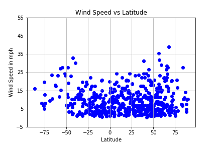

 WeatherPy looks at and examines various weather factors by city based on the latitude of the city. WeatherPy uses the citipy Python library in order to find the closest city. The dataset was around 1200 results, but after data cleaning the number of cities was reduced to just under 550. Data was cleaned using a try catch statement and then the cleaned data was saved to a CSV and later imported into Pandas for ease of use. Using the OpenWeatherMap API WeatherPy gets the the weather for each of the just under 550 cities. The fancy Python library openweathermapy makes getting the weather data even easier. Then, using the library matplotlib WeatherPy takes the transformed data and creates scatter plots based on latitude vs. cloudiness, wind speed (mph), temperature, and humidity. The pictures on this website were directly saved from the WeatherPy project.